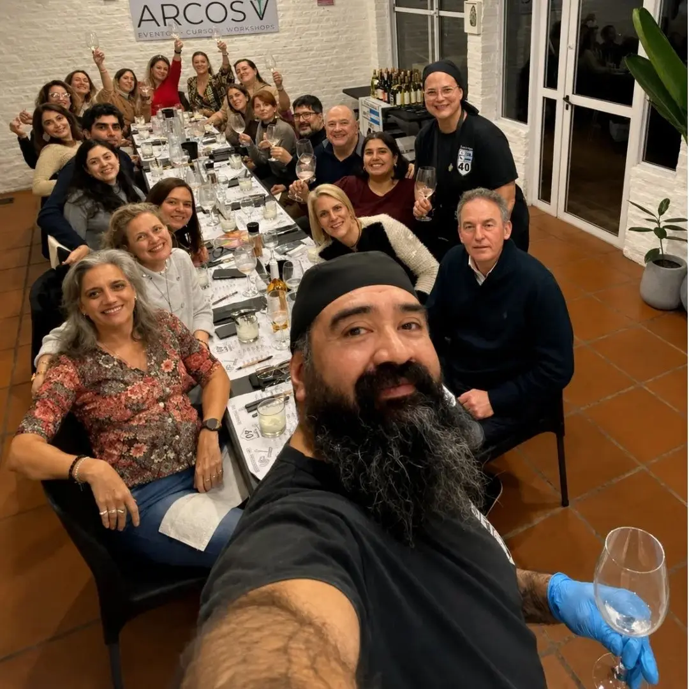
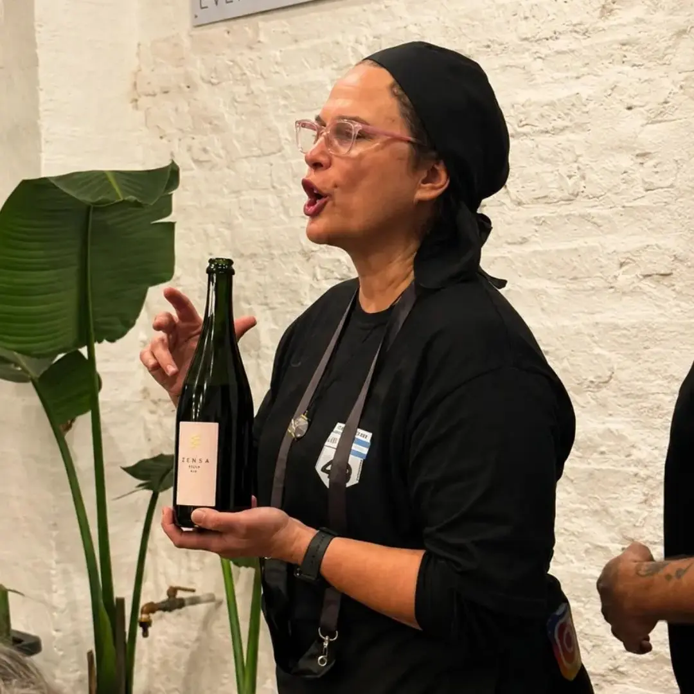
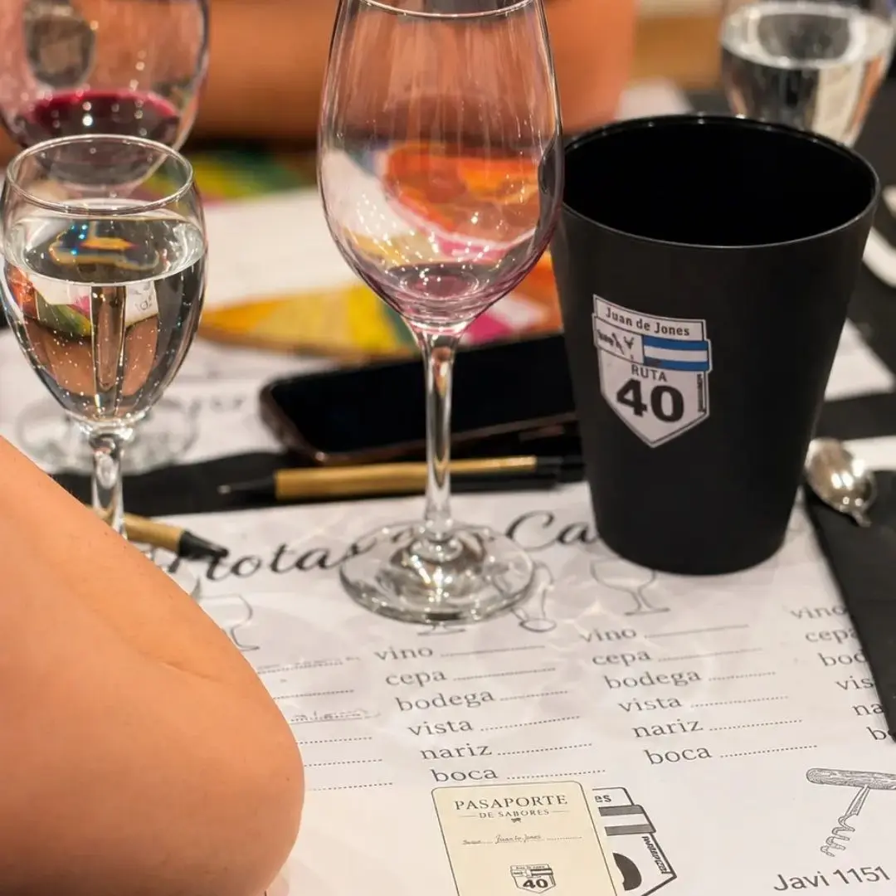

GASTRONOMIA
GASTRONOMIA
Catas de vino en Arcos V
Próxima edición
Estamos cerrando el día y la temática de la próxima cata. Escribinos y te avisamos apenas estén las fechas, así reservás tu lugar antes de que se llene.
Consultar por la próxima cataCómo es una cata acá
Val y Javi, de Vino en Jawa, arman cada encuentro alrededor de una temática distinta: una región, un grupo de cepas, o el desafío de reconocer etiquetas a ciegas. Van guiando la degustación copa por copa, contando de dónde viene cada vino y qué buscar en la vista, la nariz y la boca.
Se toma sentado, en una sola mesa larga, con un maridaje pensado para acompañar cada paso. Son grupos chicos, así que hay lugar para preguntar sin sentirse examinado. No hace falta saber nada de vino para venir.
Las catas son al caer la noche y duran alrededor de tres horas, aunque la mesa casi siempre se estira un rato más. Se puede venir solo, en pareja o con amigos: la mesa compartida hace el resto.
Ediciones anteriores
Por Arcos V ya pasaron una cata de vinos de Entre Ríos con comida del Litoral, otra dedicada a los vinos del Norte argentino, y una edición a ciegas.
Cata a ciegas
Agosto 2026



¿Querés participar?
Escribinos y te contamos las fechas, el precio y qué incluye.
Consultar por WhatsApp